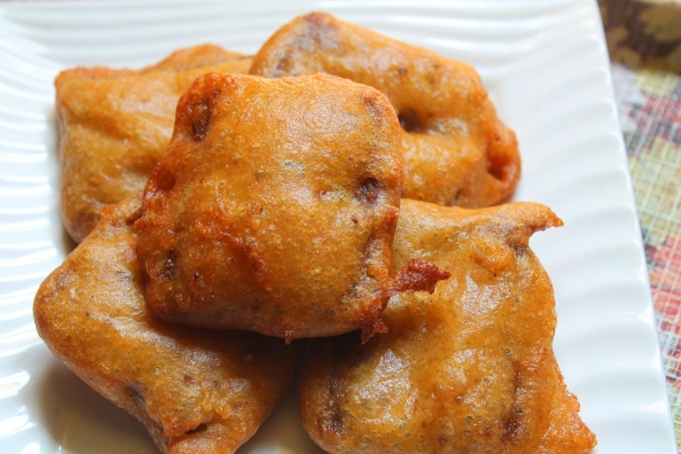

BREAD PAKORA RECIPE

INGREDIENTS FOR BREAD PAKORA
- Wheat Flour / Atta - ½ cup
- Gram Flour / Besan / Kadalai Mavu - ¼ cup
- Rice Flour / Arisi Mavu - ¼ cup
- Baking Soda / Cooking Soda a pinch
- Salt to taste
- Chilli Powder - 1 tsp
- Carom Seeds / Ajwain / Omam - ½ tsp
- Chat Masala Powder - ¾ tsp
- Ginger Garlic Paste - 1 tsp
- Water as needed
- Bread Slices - 4 to 5
- Oil for Deep frying
HOW TO MAKE BREAD PAKORA
- Cut bread into small cubes, or as you wish. Heat oil for deep frying.
- Make batter by mixing all ingredients except bread and oil to a thick batter.
- Now dip the bread pieces in batter and deep fry them in hot oil till golden and crisp.
- Serve hot with ketchup.